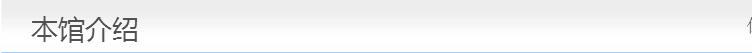

当前位置：首页>>本馆介绍

南沙区图书馆位于南沙区金蕉大道，毗邻南沙区文化馆。建筑面积6200平方米、楼高4层。有阅览座位近500座，一楼设有广州少儿馆南沙分馆，少儿阅览座位60座。目前，馆藏图书达15万册，各类报刊近700种，涵盖了包括自然科学和社会科学等各学科知识领域,为读者提供馆内阅览和外借服务。为方便读者利用图书馆,每周开放66小时,并设有残疾人无障碍设施、残障人士阅览室等，为各类读者群体提供便利服务。
南沙区图书馆是一所综合性的公共图书馆，2010年1月评定为国家一级图书馆。主要为社会各界人士提供文献借阅及信息咨询等服务，同时管理全区公共图书馆事业，调查、研究、开发和利用图书文献资源，推动公共图书馆事业标准化、网络化、现代化建设，促进公共图书馆事业的发展。
为了推动读者广泛应用图书馆设施、鼓励读者养成终身阅读的习惯，南沙区图书馆不仅向读者提供舒适的阅读环境，而且还面向社会公众开展丰富多彩的培训、讲座、展览等文化活动。
上一篇：弘扬优秀传统文化是媒体的责任 下一篇：河北省文联2016年部门预算数据分析